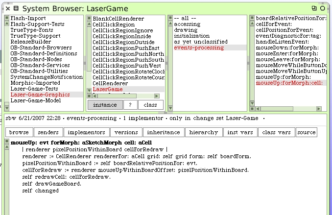
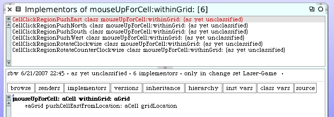

Before we get too carried away, and since I'm fairly certain we will have graphics clean-up code to write just like we did with mirror cell rotation, let's put a "self halt" inside one of the push methods and then carefully single-step through the code to see if we discover anything we may not be handling quite correctly. Let's put the halt in here:
Now we will want to push a mirror cell north and see what happens. Let's choose the mirror cell at location 1@2 and push it north. Be careful as you do this since you only want to trigger a push north event.
Our debugger opens up. Navigate into the #pushCellNorthFromLocation: method via the "Into" button. The value for the direction temporary variable looks correct.
Step into the #pushCell:fromLocation method and then continue to step "Over" until you get to the method that wants to swap cells. Step into that method.
Continue to step "Over" until we complete the swap method. The value for aCell looks correct. It's now at location 1@1.
Continue to press "Over" and even go past the method where we inserted our initial "self halt". Eventually you get back to the MirrorCellRenderer object.
Something doesn't look right in here. That #redrawCell method is being issued to the mirror cell renderer. But if you inspect the "cellLocation" variable you can see that this is a mirror cell renderer that still thinks it's for a mirror cell at location 1@2. That's where we used to be.
The #redrawCell isn't going to work since we think we're a renderer for a mirror cell but in fact are now pointing to a blank cell. Clearly, the MirrorCellRenderer is going to have to handle situations where the cell got changed underneath it.
We're going to modify a few methods so that we are always aware of the cell we are dealing with when we need to do a redraw. The easiest way to follow this is to begin at the high end of the event process and examine every portion of the methods doing the work related to the event all the way down to the actual push and rotate methods. Begin with the LaserGame instance method #mouseUp:forMorph:cell:. Here is the existing method.
mouseUp: evt forMorph: aSketchMorph cell: aCell
| renderer pixelPositionWithinBoard |
renderer := CellRenderer rendererFor: aCell grid: self grid form: self boardForm.
pixelPositionWithinBoard := self boardRelativePositionFor: evt.
renderer mouseUpWithinBoardOffset: pixelPositionWithinBoard.
self drawGameBoard.
self changed
In the Class Browser click on the "implementors" button and choose #mouseUpWithinBoardOffset:. There are 2 implementors.
Change the CellRenderer method so that it answers the current cell.

The MirrorCellRenderer method should answer whatever we get back from the message we send to the "regionClass". Remove the #redrawCell code because we intend to handle that request back at the LaserGame soon.
Back at the LaserGame #mouseUp:forMorph:cell: instance method we should now capture the answered cell and do special redraw operations on it.
The #redrawCell: method is new and we haven't worked out yet what we want it to do.
Back to the MirrorCellRenderer class. We need to chase down the implementors of the #mouseUpWithinCellAtPoint:cell:withinGrid: methods to make sure they now answer the involved cell. There are 3 implementors.
The CellClickRegion class method needs to be code as:
mouseUpWithinCellAtPoint: aPoint cell: aCell withinGrid: aGrid
^aCell
Here's the new version for CellClickRegionInside of the class method. We just added the return ^.
mouseUpWithinCellAtPoint: aPoint cell: aCell withinGrid: aGrid
| pushRegion |
pushRegion := self pushRegionForPoint: aPoint.
^pushRegion mouseUpForCell: aCell withinGrid: aGrid
The change to the class method for CellClickRegionOutside is similar.
mouseUpWithinCellAtPoint: aPoint cell: aCell withinGrid: aGrid
| rotateRegion |
rotateRegion := self rotateRegionForPoint: aPoint.
^rotateRegion mouseUpForCell: aCell withinGrid: aGrid
Now we look at the implementors of the #mouseUpForCell:withinGrid: method to make sure they answer the involved cell for redraw too. There's 6 implementors.
Modify all 6 so that they return the result of their operation. They should look like this.
The rotation methods can just answer the cell without worrying about drilling down any lower. I took the "self halt" out of the push north. Now we write the redraw cell code on LaserGame.
That was a lot to change. Let's open up a new LaserGame morph and try it out.
It works! I moved around a few cells and rotated some cells, all while the laser beam was active and got the target to light up.